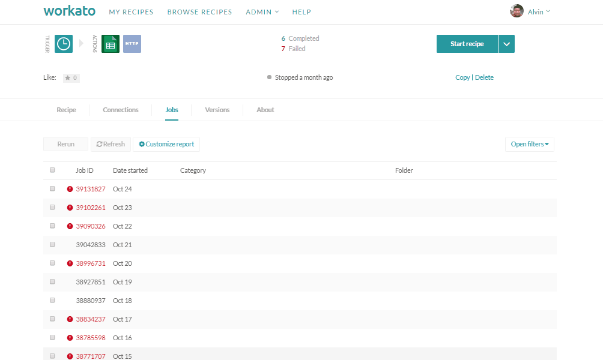
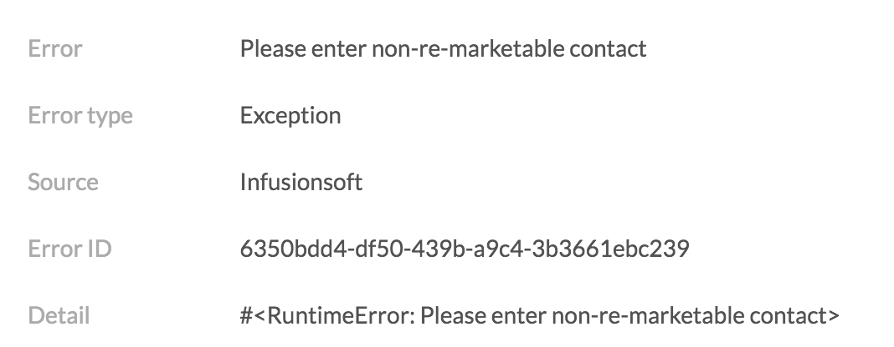
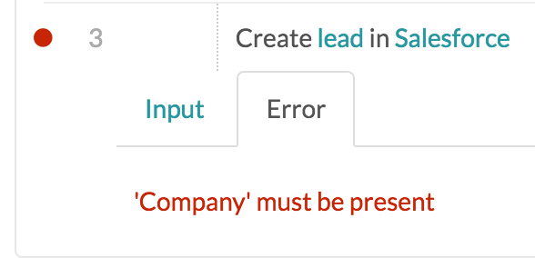
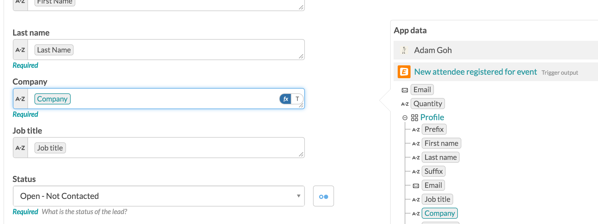
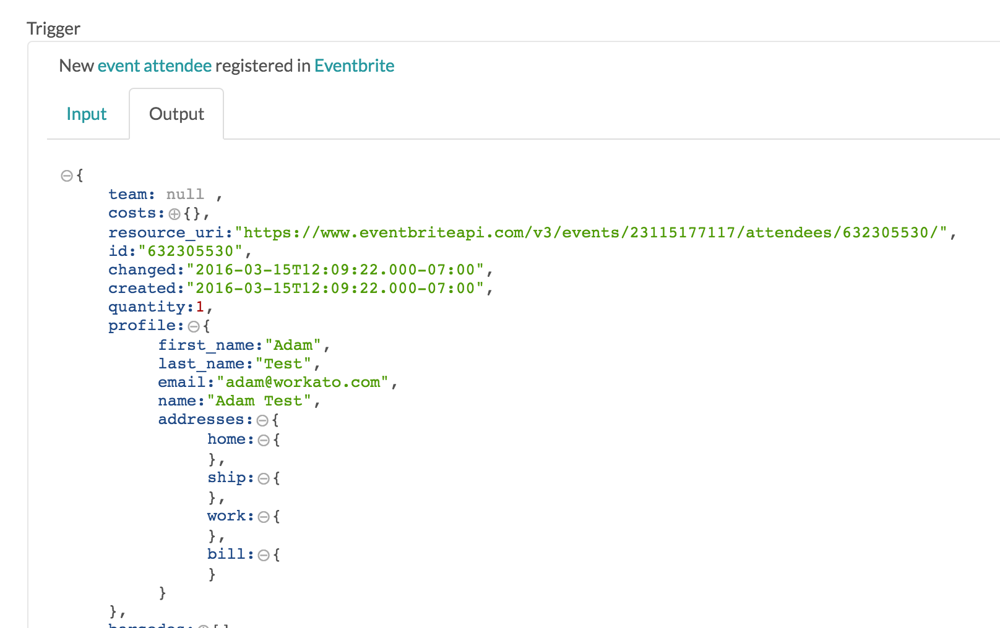
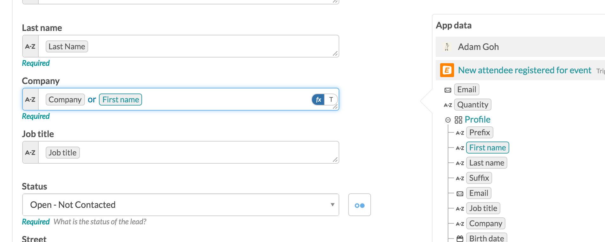
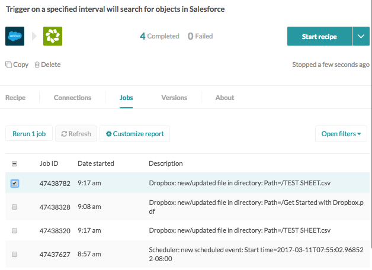

Action Errors
When working on Workato, you will occasionally encounter errors. Errors arise when something has gone wrong with the recipe, like when a recipe wasn't configured properly, or the app you are trying to connect with is experiencing downtime. Job Failures and how to deal with them
When one of your recipes encounters an error, you will receive an email informing you about it. You will also see a red
rJD7hmlUodRmH3X4krGRFqY-l3X8P14SLw.png
This is a sample of a recipe. The red digit is the number of errors or failed jobs while the green count is the number of successful jobs. You can check out your failed jobs at the "Jobs" section after you click into a recipe. Cli

If you have many jobs in your job history, you can also filter out jobs based on the status of the jobs, so that you can see all the failed jobs at a glance.

Understanding failed job messages
Now that you know how to view failed jobs, its time to learn how to understand failed job messages. When you click onto the failed job, you will be able to take a look at the job page.

The job page has a few pieces of information that you should be aware of : Error : Gives you the exact error message from the connector Error Type : Tells you a general message about what the error is about. Source : Where the error is coming from. Red Line | : The red line appears on the left side of an action, andshows the step that is throwing the error. (In the above case, this is on step 3)
Common root causes for failure are :
- A Required input field was empty. It may not be filled with any value, or the data pill used in that field does not have any value.
- An object couldn't be found using the key/ID provided in the field.
- You attempted to create an object with the same/existing names available.
- Improper Formula mode conditions were applied on a null pill
Tracing your recipe
When your recipes get too complicated, errors are hard to follow. The best way to trace your errors is a bottom-up approach. Start from where the error is coming from, and work your way from there and follow the data. Here is an example of how you can trace errors
- Start with identifying which field in the error step that is rejecting the input.
- Open up your recipe in a new browser tab. Check what is filled up in that specific field
- Trace the possible field that is providing the wrong value. Then, check out where the value comes from in that step.
- The data pill will most probably come from a different step. Now go back to the job page, and check at the output data of that step, and see what is the provided value for that step.
- You can keep going down the chain to reach the root of the data source.
Example
Errors are messages that are very important to understand what is wrong. You should devise the meaning of these messages. Some errors are a little more complicated, while some are pretty straightforward.
Knowing where the source of error is coming from is also very useful to know why is the error being thrown. For example, When we try to make a contact marketable, you may hit an error that is unique to only Infusionsoft :

Errors like this give a whole lot more context into what went wrong, and what can you do to fix them.
Identifying the step that error that was being thrown is the most important. The first thing you will need to do is to associate the input data in that step with the error message.

Seems that the company field is empty in my recipe. I need to have a company in my Salesforce's Lead to create one
I then go back to my recipe, and see what is filled in the Company field in Step 3. Seems like I have a data pill in that field already. I click on the data pill, and it shows that it comes from the Trigger.

Now, I will check what is the actual data that the specific failed job received from the trigger record. I look for the Company value under Profile (where the data pill came from), and found that it does not exist. Seems that the reason that the recipe failed was because it used a data pill that has no value in it.

I want to make sure that there is always value provided in required fields. To do so, I will need to be able to choose a second alternative data pill that I can ensure there is always value in it.

In this case, I know that there is always a First Name in the Eventbrite's profile. I will turn on formula mode, and put an OR in between the data pills.

Now, if the data pill "Company" does not have any value, it will use the value that comes from First Name. I make the change in my recipe, and try re-running the failed job. Seems like it's been completed!
To find information on the errors you are facing, simply run a search on our helpdesk with keywords of the error such as the source and details. If you don't find anything, you can simply ping us on livechat and we will do our best to assist you.
Trigger Warnings
What are trigger warnings?
Trigger warnings are messages that appear at the top of a recipe upon starting it. Warnings look similar to this:

What is the difference between a job error and a trigger warning?
How to resolve trigger warnings
Resolving trigger warnings depend on the type of error in the warning. The most common trigger warnings are as follows: